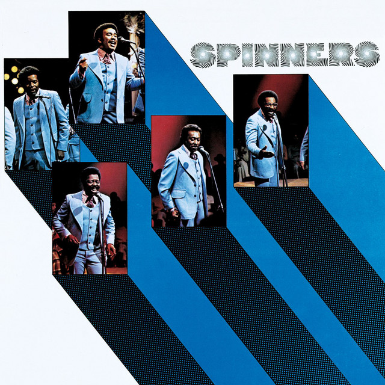

The Spinners - Spinners



Información del álbum facilitada por discogs.com:
Fecha de lanzamiento: 1978
Géneros: Funk / Soul
Estilos: Soul
Tracklist:
A1. I’ll Be Around (feat. Phil Hurtt & Thom Bell) 3:10
A2. How Could I Let You Get Away (feat. Yvette Davis) 3:45
A3. One Of A Kind (Love Affair) (feat. Joseph Jefferson) 3:19
A4. Mighty Love (feat. Bruce Hawes & Charles Simmons (2) & Joseph Jefferson) 4:56
A5. Ghetto Child (feat. Linda Creed & Thom Bell) 3:47
B1. Then Came You (feat. Dionne Warwick & Phillip T. Pugh & Sherman Marshall) 3:57
B2. Sadie (feat. Bruce Hawes & Charles Simmons (2) & Joseph Jefferson) 3:30
B3. Could It Be I’m Falling In Love (feat. Mervin And Melvin Steals) 4:12
B4. They Just Can’t Stop It The (Games People Play) (feat. Bruce Hawes & Charles Simmons (2) & Joseph Jefferson) 3:28
B5. The Rubberband Man (feat. Linda Creed & Thom Bell) 3:32